まぁこのページは俺が誰かに思考共有する際、その人がまだ儲かっていない状態だった場合、前提情報を頭に突っ込んでねって内容のページ。基本的にチャートのみで期待値を追うトレードはNGなんだけど、ローソクの形あってのoi や過熱感なんでテクニカルはデフォ、全部含めて前提だから、前提の前提。
儲かってるならライントレード⇨ローソク1⇨ローソク2へ進んで大丈夫。
------------------------------どこで止まるか当てにいかない-----------------------------
よくツイッターで見かけるのは、
インフルエンサー（）『言った通りここで止まりましたね。乗れた方おめでとうございます。』
養分『流石です！これからも付いて行きます！』
これアホすぎ。
当てる必要なんかないんですよそもそも。
ポジション持ってたら想定はしないといけないけど、新規ポジを作るときは全く必要ではない要素だと自分は考えています。まず、養分的にはどこで止まるんだろう、そこに来たら買いたいから誰か教えて欲しいと思っているんでしょうが、思考の順番が違います。
養分のエントリーは場所で考えているけど、自分は買えそうになったときタイミングで買うってイメージ
ここからは画像交えて解説していきます。
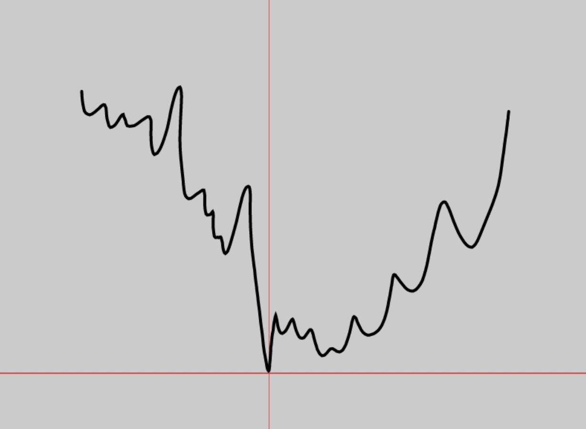
例えば、こういうチャートがあったとしてエントリーのタイミングが縦線の人が称えられがちですけど、これ何も凄くなくて、危なくね？って印象しかない。ここで反転する可能性はあるけど、縦線の段階だと下降トレンドの中の短期的なリバの可能性が払拭しきれず、根拠が薄すぎる。
半年以上守ってきた水平とかなら試しても良いんですけどね。
それに対して
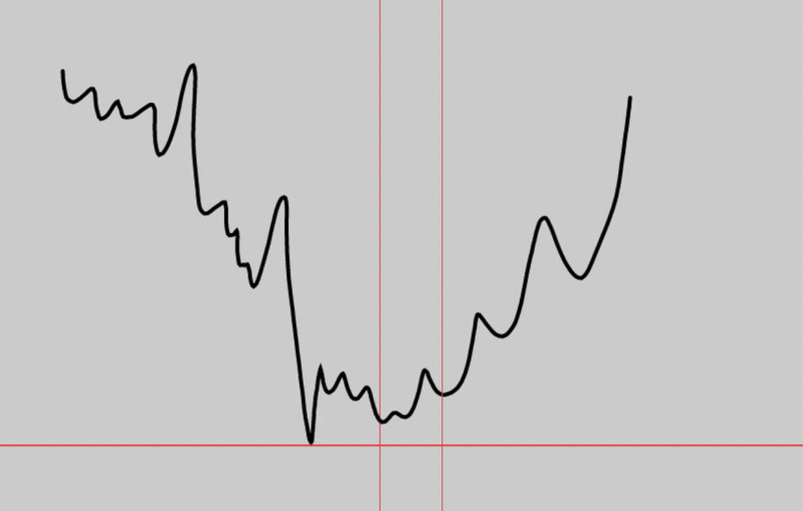
本当に狙いたいのはこういうところ。
こういうところでポジションを取って安値にストップを置いて寝てれば良いんです。
上手い人が言う横軸を待つっていうのはこういうことだったりしますね。
めちゃくちゃ強いトレンドではない限り基本的に二番底二番天井をくれるし、置いていかれるっていう思考を持ってはいけない。それと二番天底でポジションを持つことを意識することによって、トータルのポジション回数が減って連続損切りになることが少なくなる。
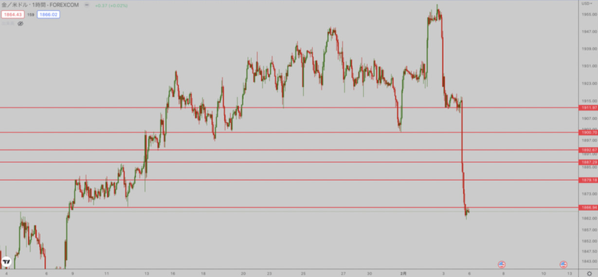
どうせこの画像とかの動きで逆張りしてこれ全部狩られたの知ってますよ。
上で説明したようにポジションを取れば逆にロングできる所なんかないんですよ。
どこで止まるかよりも、どこで止まったか。を意識してください。
それを踏まえてチャートを見ていくともし仮にゴールドを買いたいと思っている場合
やっとエントリーできるのはここだけ。↓（ゴールド１５分足）
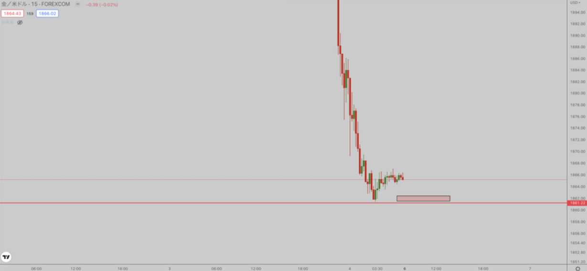
まあ急落の値幅を考えると自分は買いませんけど、ルール化するならこういうところは買っても良い。
狩られても背が明確だし、確実にsl置く背があるので。
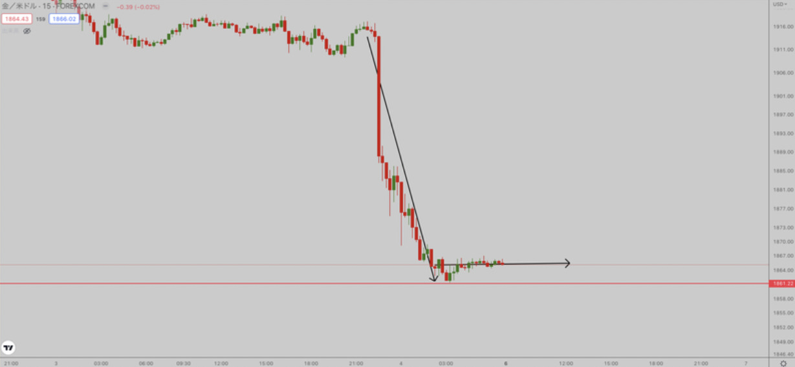
下落の角度も変わって、安値更新も一旦は止まってますしね。
ざっくりまとめると、二番底、二番天井しか触るな。横軸を待て。ってことです。
これでポジると止まる場所、当てに行く必要ないですよね。
止まってから、あ、ここが一旦止まった場所なんだ。で良いんですよ。
じゃここに水平引いてここからエントリーしてみよ。くらいの気持ちで。
この辺で止まりそうとかこの辺で止まったらエントリーしてみようって想定を立てておくのは問題ない。
想定と事実は別に考えておかないといけないのは肝に命じて欲しい。
次。
--急落急騰に逆張りして良いのは最低でも１５分足で１本は逆の色の足が付いてから--
逆の色っていうのは、急落なら陽線、急騰なら陰線。
厳密には””強い逆の色の足””なんですけど、強いの判断基準に値幅を設定することは不可能なのでここは個人の判断になります。個人的にはクロスで閉じた場合は絶対に””強い””に含まない。
若干内容被るんですけど、スキャでちょっと抜きたい場面とかありますよね。
それとさっきの内容を組み合わせる。
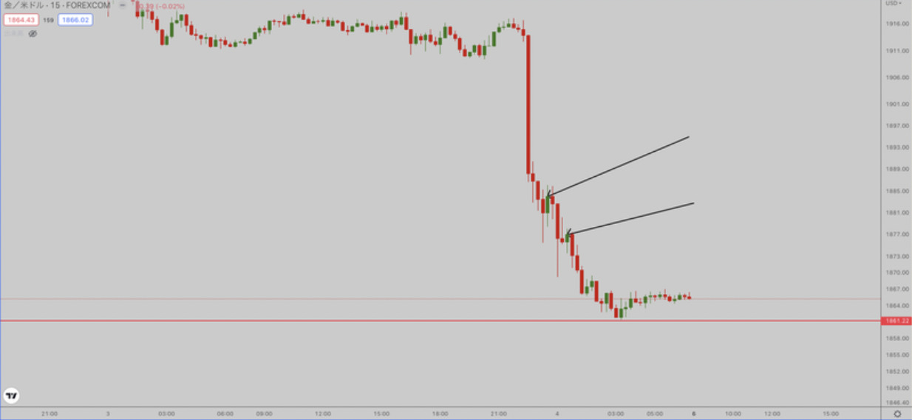
こういうところね。
このローソクをつけた後に、一番近い安値を背にした逆張りならスキャならやって良いって感じ。
これならど短期で言うと二番底を狙えてる。
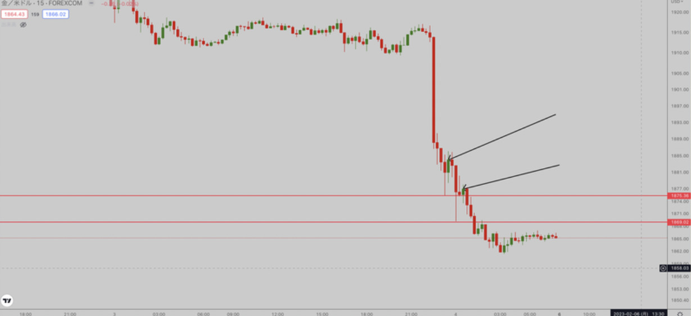
安値ってのはこういうところ。↑
もちろんスキャだけでの話で、こういうポジションを握ろうとするから利益が無くなるんだよ。
１分足で二番底っぽかったので〜とか５分足が〜とか言う人がいますが、１５分未満の足の二番底なんて個人的には一切信用できない。根拠にもならない。それを伸ばそうとするから結局帰ってくるんですよ。
秒速で投げるスキャなら良いと思いますね。
次。
--------------------------上がるか下がるかなんて誰にもわからん------------------------
最初にどこで止まるか当てる必要はないと言いましたが、それと同様に上下どっちに行くかなんか、誰にもわからない結果論。上がる確率、下がる確率、どっちが高いかはチャートで判断して、しっかりslを置くことしかできないんですよね。(仮想通貨は別笑)
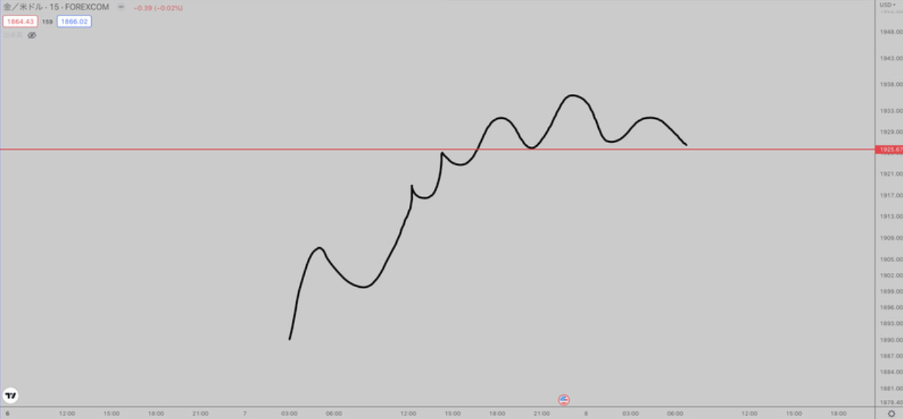
例えばこういうチャートだととりあえず下がりそうに見えますよね。
とりあえず下がるように見えてるだけなので、下がるかもしれないし上がるかもしれない。
自分の定めたリスク範囲内でトレードをしているわけなので、どう動いても良いように資金管理すること
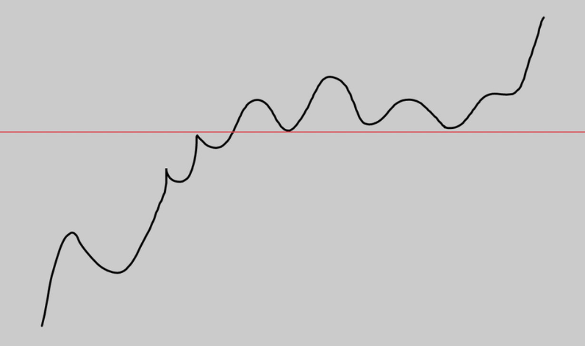
例えばこうなっても仕方ないと思えるようにすることが大切。↑
よくどれくらいのロットでやれば良いとか、損切りは資金に対して何パーセントくらいが良いとか言いますけど、基本的には１０回連続損切りしても同じロットが打てるような資金管理が一番安全だとは思います。正直ロスカされないならなんでも良くね？って思うけど
次。
-----------------------------極力レンジブレイクを狙うこと-----------------------------
これはあくまでも個人的な見解。ただ自分はそうしてるのでシェアします。
逆にレンジが得意な人はレンジしか触らなくて良い。
基本的にレンジってことは、張り付いてトレードしないと、あまり値幅が抜けないんですよね。
個人的には楽してお金が欲しいからトレードをやってるんですよね。 てことは張り付くのであれば時給の高いバイトをやってるのと変わらないので 極力時間の切り売りでお金を得るのはやりたくないんです。
そして一番触りたくない原因が、難易度が高いことが多いんですよ。
例えばビットコインバブルとドル円バブルは圧倒的に難易度が低くて、下手でもある程度は儲かる。
それは強いトレンド相場だから。とりあえず下がった時に買ってればなんとかなるんですよ。
レンジほど揺さぶられてメンタルやられたら無限にお金溶けるんで気をつけましょう。
勝てないなら触るな、勝てるなら触っても良い。
ビットコイン１時間足
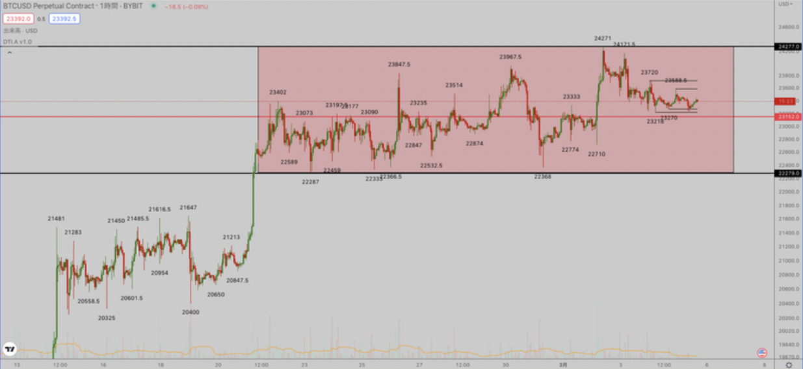
個人的なレンジでの立ち回り、考え方で言うと、まず赤ボックスをレンジと捉えます。
そのあとにレンジ中央線ないし意識されてそうなゾーン（この場合でいうと23000ドル）に水平を引く。
それより下に来たら買ってレンジ安値ストップで放置、それより上に来たら売って安値ストップで放置。
そうすると目線なんかなくてもそのうちブレイクに乗れるんですよね。
基本的にはトレンドが出ている場合、レンジ＝横の調整なのでトレンド方向に順張りするのが正解です。
最後、トレ転のタイミングは損切りされるのは仕方がない必要経費と捉えること。
次。
-----------------------待つ時間が一番大事、待てるようになること----------------------
トレードはポジってる時間よりも待つ時間の方が確実に長い。
上の話でもそうだけど、二番底を形成するまで待つとか、１５分足確定まで待つとか待つ時間が必要。
自分の得意な形、パターン、状況になるまでひたすらに待てないと勝ちきれません。
まあ、エアトレ（お前らバレてるからあんま調子乗んなよ）もいますけど、TLのハイレバスキャ勢もスキャができる環境になるまで待ってるんですよ。自分ならスイングで仕込める環境になるまで待つ。
これができないと一生勝てないので今すぐ引退してください。
スキャベースだと、突発的なボラが発生した時、日足、４時間足レベルのレジサポに接近してきた時。
ここは確実にボラが出やすいのでこういうところを探す。スイングだと日足レベルのブレイク。
次。
-----------------------------ストップの位置をちゃんと決めろ---------------------------
ストップの位置が変な人が多いんですよね。
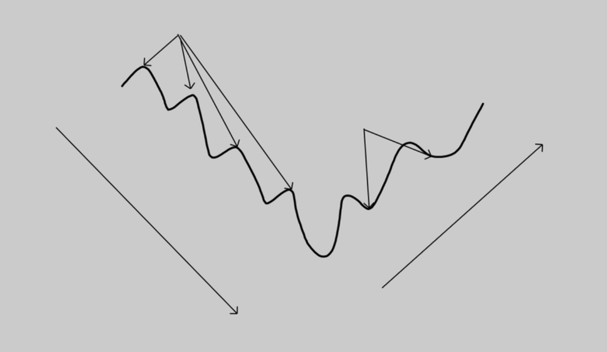
左がショートのストップ位置、右がロングのストップ位置。
必ず最後の押し安値、戻り高値にストップを置く。中途半端な位置に置くならエントリーしなくて良い。
具体例を挙げるとこんな感じ。
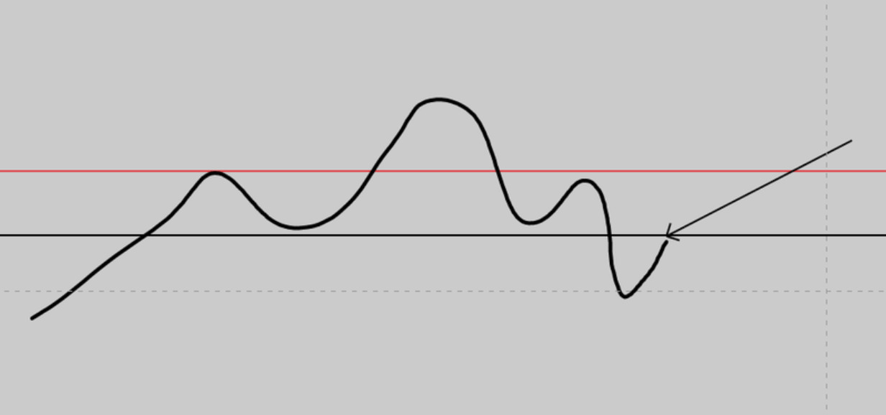
三尊ショートのエントリーを黒水平だとすると赤水平超えでカット。
ちょっと折れたからといって、その折れたきっかけになった高値に置く人がいるけどマジで意味ない。
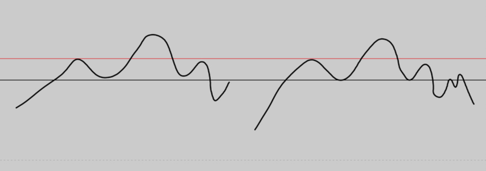
これに対応できないから。
その値幅も耐えられないならそもそもレバかけすぎなんですよ。
それともう一つ、建値ストップ問題。これは個人的にはセンスない。
仮に建値まできたら、直近安値高値を更新する確率が大幅に上がる時のみ良いと思っています。
ドル円直近４時間足
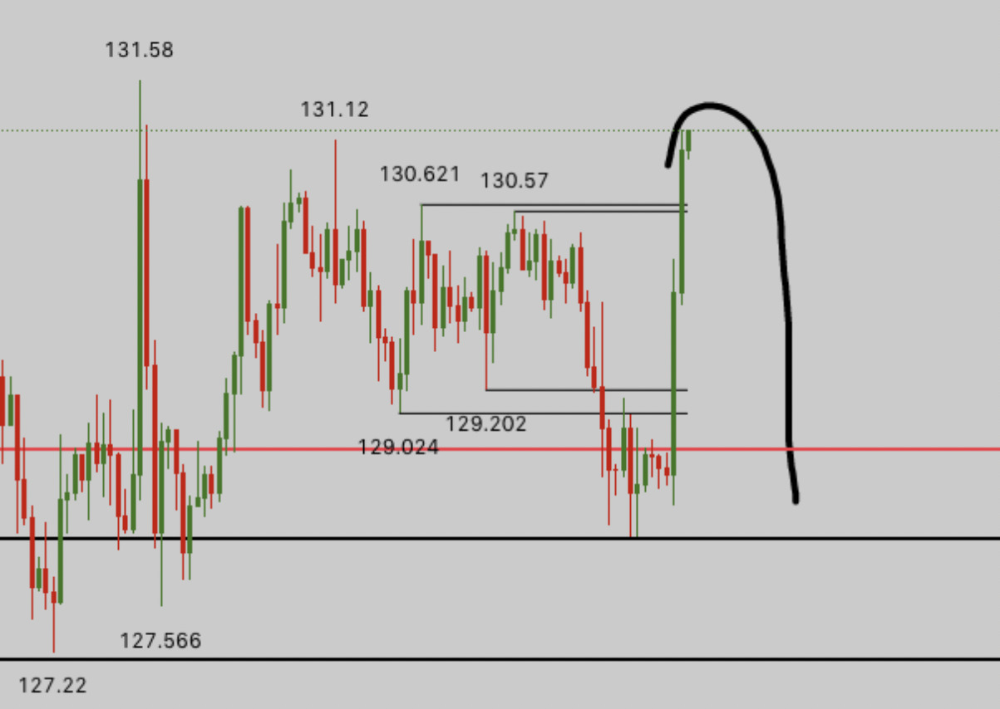
長めのポジションのストップ位置って黒水平の２箇所しかないですよね。
じゃあ仮に赤水平でロングしていたとすると、赤水平まで帰ってきた場合図のような流れになるのは想像できますよね。すると上の黒水平が割れる可能性がかなり上がる。
この場合黒水平が割れる確率が上がっているのに黒水平割れまでポジションを引っ張るのは意味不明なので別に建値ストップでいい。
次ダメなやつ。
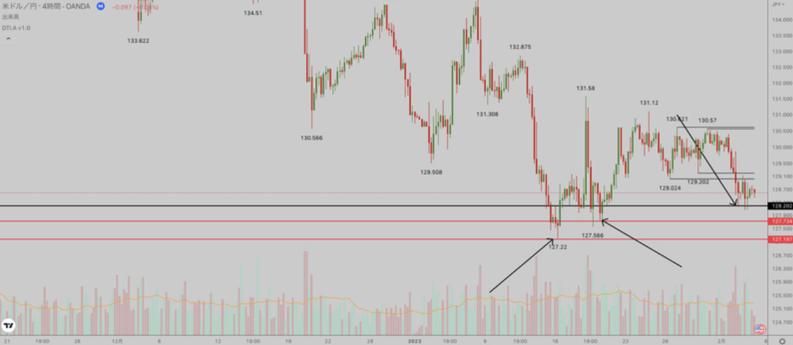
ブレイク前です。
この場合、安値が下の赤線、最後の押し安値が二番目の赤線。
黒水平でエントリーしたとしましょう。
当初想定した背中は二番目の赤線だとして、黒水平エントリーでストップの位置を黒水平にずらす行為。これもダメ。結局、結果論になるけど、この場合ゾーンで見ているなら貫き通すこと。
ドル円１５分足
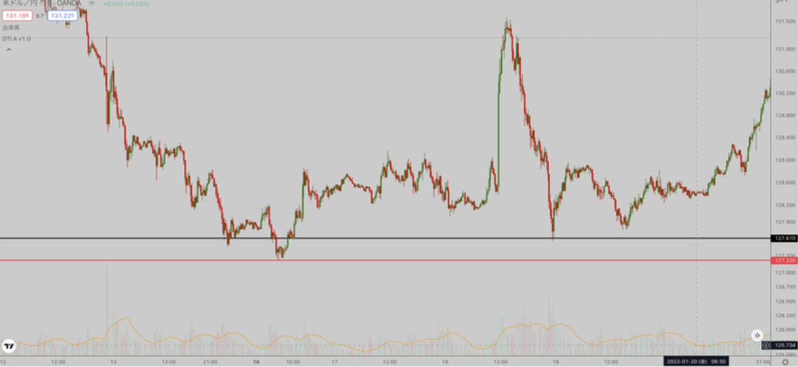
ちょっと長めの軸だけど、１６日のロングエントリー黒線、ストップ赤線と仮定。
18日に伸びたからといってslを建値に変更する行為。これもダメ。
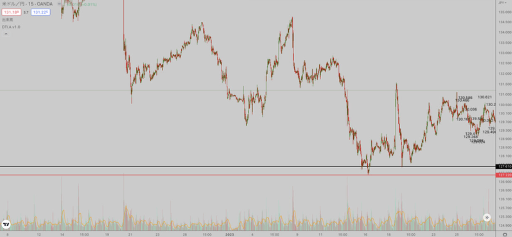
長い目で見ると二番底すらきていないのに買ったんだよね。 で、なんでそこで切るの？ってこと。
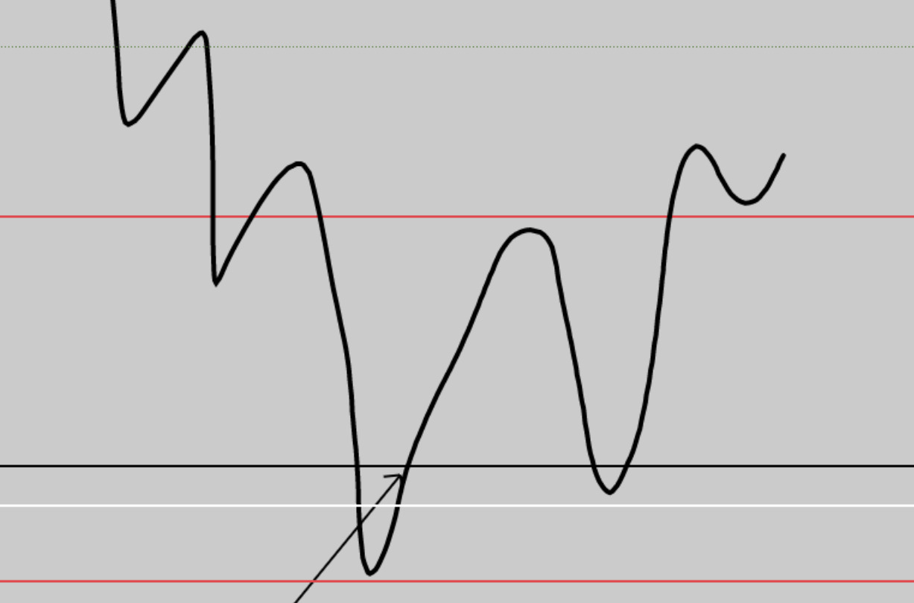
例えばこれ。
矢印でロングエントリー。最初のストップ位置は下の赤線。次にまた落ちてきたけどホールド。
上の赤線のネックラインを抜けたので、建値slに変更。これは大丈夫。
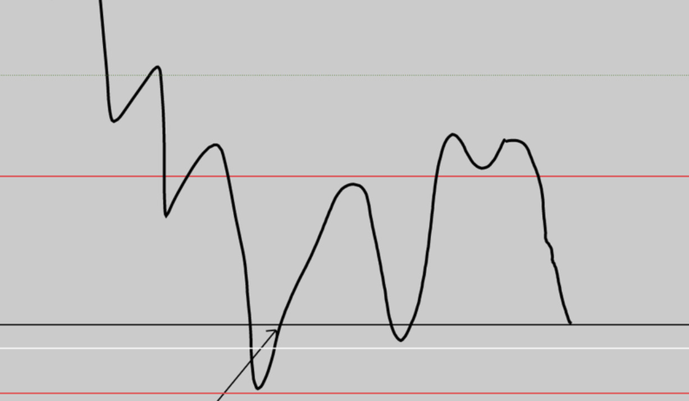
黒線（建値）まできた時点でブレイク前最後の押し安値になった白線を割りそうですよね。これは良い。
なのでこの説明をちゃんと見て、自分のストップの位置を見直してみてください。
以上。
じゃあ最後にまとめて思考の順番を書くので、次にエントリーするときは意識してください。
- 自分が売買したい位置を想定する（折れるかな、反発するかな等）
- ↓
- そこまでひたすら待つ
- ↓
- 来た
- ↓
- そこでのチャートの形成を待つ
- ↓
- 反転しそう（めちゃくちゃリバが強い、底固めしている等）ならエントリー
- ↓
- ストップをちゃんと高値安値に置く
これを守れるか守れないかだけでかなり損益変わってくると思うんで実践してくださいね。
以上で前提で入れといて欲しい内容は終了。まぁキリがないのでこのこの辺で、、、
ここからはライントレード→ローソク1→ローソク2へ進んでください
テクニカルに関しては内容全部腹落ち出来れば儲かるはず。
ただ、テクニカルだけでは期待値を追っていくトレードしか出来ないので、データ分析のページやリスク資産 等の資金循環、ファンダも覚えれば狼狽することなく儲けられるはず。